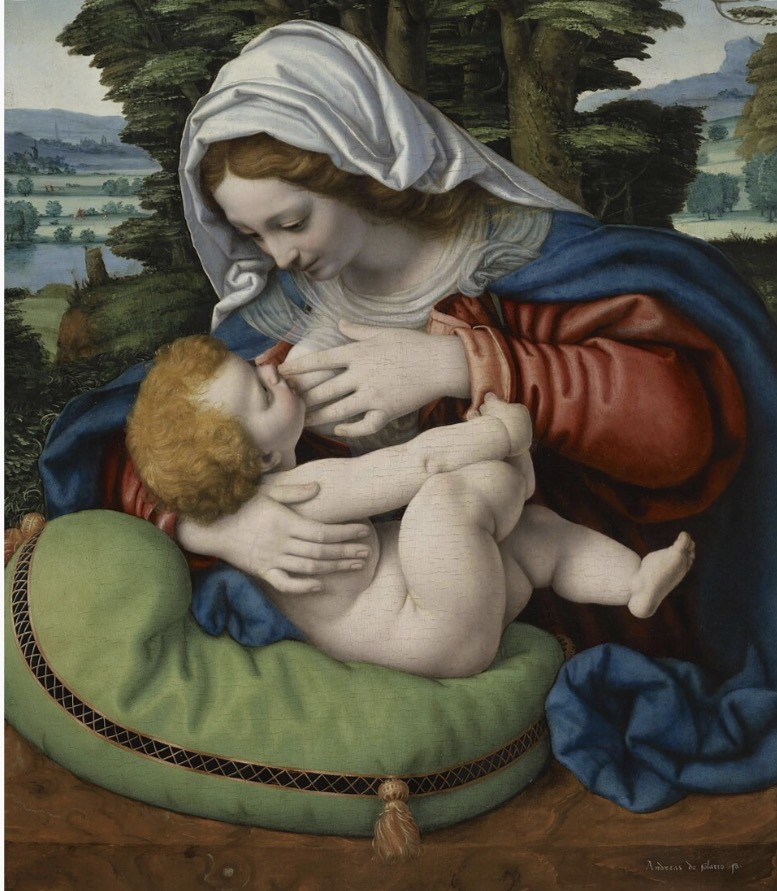

01
Medicina
Como a amamentação influencia a saúde da criança, da mulher e da sociedade — e por que orientar não é o mesmo que culpabilizar.
Amamentação e medicinaAmamentar também é parte da história humana.
Ao longo dos séculos, a amamentação foi registrada pela medicina, pela religião, pela cultura e pela arte. Este projeto reúne essas representações para compreender como o cuidado, o corpo e a maternidade foram vistos em diferentes épocas.

01
Como a amamentação influencia a saúde da criança, da mulher e da sociedade — e por que orientar não é o mesmo que culpabilizar.
Amamentação e medicina02
Como diferentes épocas representaram o ato de amamentar e que significados atribuíram a ele, da estatueta votiva à gravura moderna.
Percorrer os períodos03
20 obras em ordem cronológica, com ficha completa, contexto e uma pergunta de reflexão para cada uma.
Abrir a galeria